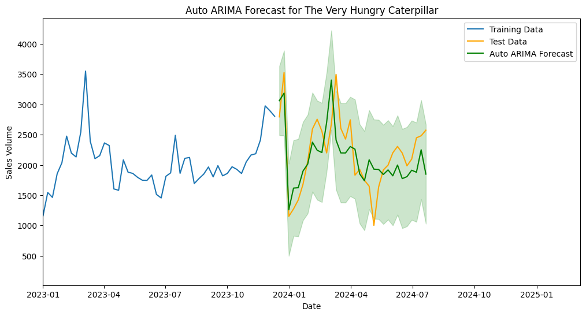
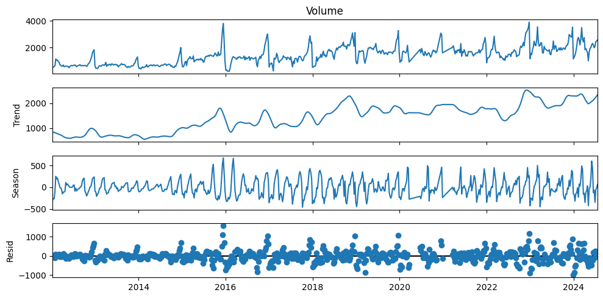
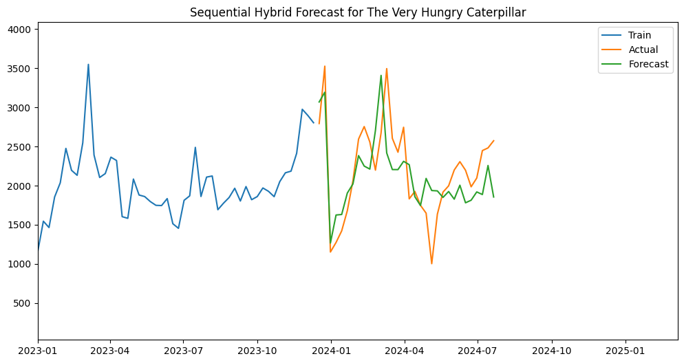
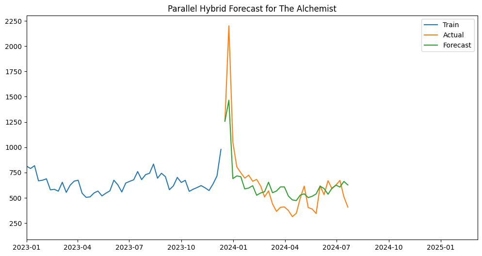

Compared ARIMA, SARIMA, XGBoost, LSTM and hybrid forecasting models across two book sales datasets to evaluate forecasting accuracy and business value.

The project investigated whether historical sales data could forecast future book demand accurately enough to support procurement, stock planning and inventory decisions.
Book sales are affected by trend, seasonality, popularity cycles and sudden demand spikes. For publishers and retailers, poor forecasting can create stock shortages, excess inventory and inefficient procurement decisions.
This project used historical sales data for The Very Hungry Caterpillar and The Alchemist to test whether future demand could be predicted using a mix of classical statistical models and machine learning techniques.
The goal was not simply to build a model, but to compare approaches objectively and identify which method produced the most useful forecasts for each dataset.
The analysis focused on trend, seasonality, forecast accuracy and residual behaviour to understand whether model outputs were reliable enough to inform business decision-making.
Decomposition helped separate the observed sales volume into trend, seasonal and residual components, making it easier to understand the underlying structure before modelling.

Sales showed a long-term upward movement, suggesting the series was not purely random.
Recurring fluctuations indicated that repeating demand patterns were present in the data.
Remaining noise highlighted the limits of modelling and the need for forecast diagnostics.
This dataset contained larger sales volumes, visible seasonality and recurring demand movement. Statistical forecasting approaches performed particularly well, with the strongest monthly result achieved by SARIMA.

The Alchemist behaved differently, with a sharp demand spike followed by lower, more stable sales. The best result came from a parallel hybrid approach, showing that different datasets can favour different forecasting methods.

The results showed that no single model consistently dominated. The best approach depended on the structure and behaviour of the individual sales series.
| Model | Caterpillar MAPE | Alchemist MAPE | Comment |
|---|---|---|---|
| Auto ARIMA Weekly | 17.17% | 25.79% | Strong statistical baseline |
| XGBoost Weekly | 26.89% | 34.93% | Lag-based ML approach underperformed here |
| LSTM Weekly | 23.85% | 27.15% | Deep learning did not outperform simpler models |
| Sequential Hybrid Weekly | 17.13% | 25.80% | Competitive hybrid performance |
| Parallel Hybrid Weekly | 17.07% | 23.31% | Best weekly result for both books |
| SARIMA Monthly | 16.21% | 35.96% | Best overall result for Caterpillar |
| XGBoost Monthly | 16.74% | 40.42% | Strong for Caterpillar, weak for Alchemist |
The project followed a structured analytical process, moving from exploration and diagnostics through to model development and evaluation.
Different datasets favoured different forecasting approaches, so model selection needed to be evidence-led.
Classical statistical methods performed strongly and, in some cases, outperformed more complex ML models.
Accuracy metrics are useful, but the real value comes from supporting procurement and inventory decisions.
The full repository contains the supporting notebooks, preprocessing steps, model outputs and evaluation work.